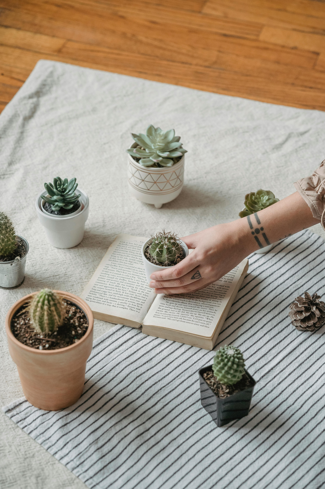

In a world full of flowers, be a cactus
You can't water a cactus every day, but when you do, it thrives. I've learned over the years that kids, like cacti, don't always need constant attention to thrive. Sure, they need love, guidance, and the occasional nudge to do their homework, but they also need space to grow on their own. Cacti are the perfect reminder that it's okay to let go a little and trust that the seeds you've planted will eventually bloom, just maybe not on your schedule. And when you do pour your love and energy into them, they'll thrive in ways you never imagined.
Types of cacti

Cacti are a diverse group of plants known for their unique adaptations to arid environments. They come in a wide range of shapes, sizes, and colors. Here are some of the most popular and interesting types of cacti:
-
Saguaro (Carnegiea gigantea)
Native to the Sonoran Desert, the saguaro is the classic "tree-like" cactus with arms reaching skyward. These giants can grow up to 40 feet tall and live for over 150 years. -
Prickly Pear (Opuntia)
Known for their flat, paddle-shaped pads and colorful edible fruit called “tunas,” prickly pears are widespread across the Americas. Their pads are often covered in both large spines and tiny hair-like glochids. -
Barrel Cactus (Ferocactus & Echinocactus)
Barrel-shaped and ribbed, these cacti store water efficiently and are often found in desert regions. They can grow quite large and sometimes lean toward the sun as they age.
Columnar Cacti

Columnar cacti are tall, upright cacti that grow in columns or pillars, often resembling green spires rising from the desert floor. Unlike low-growing or globular cacti, these species can grow several feet tall, and some even branch out like trees. They're native mostly to the Americas, especially in desert and semi-desert regions.
Padded Cacti

Opuntia cacti, commonly known as prickly pears, are one of the most recognizable and widespread types of cacti in the Americas. They’re easily identified by their distinctive flat, rounded pads, which are actually modified stems called cladodes. These pads store water and help the plant thrive in harsh, dry environments.
Barrel Cacti

The barrel cactus is a stout, ribbed cactus known for its round or cylindrical shape and impressive spines. These plants are masters of survival, adapted to thrive in some of the harshest desert environments. Their thick, water-storing stems and low profile make them both functional and iconic in the landscape.
Succulents
Succulents are plants that store water in their thick, fleshy leaves, stems, or roots, allowing them to survive in dry, arid environments. They come in a wide variety of shapes, sizes, and colors, and are known for their low-maintenance care and striking appearance. Popular types include aloe, jade plant, echeveria, haworthia, and sedum. Some even bloom with small, colorful flowers! Perfect for indoor pots or rock gardens, succulents thrive in bright light, need minimal watering, and prefer well-draining soil.
Blooms in Cacti

Though cacti are best known for their spines and resilience, many produce stunning, colorful flowers that stand in striking contrast to their tough, thorny exteriors. Cactus blooms are often short-lived but spectacular, and they play a vital role in desert ecosystems.